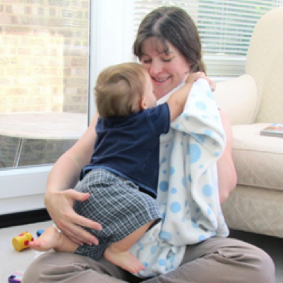

Alexandra Hall has spent two decades working in science communication, business, and education. While primarily focused on space exploration and astronomy, Alex is passionate about improving science literacy and critical thinking – skills she considers essential to participate fully in today’s society. As a science center CEO, author, and former TV host, Alex hasn’t shied away from engaging with creationists, ufologists, astrologers, and other pseudo/anti science practitioners.
I was still trying to come to terms with how things had played out. In the space of just over a week I’d gone from winding down my work so I could go on maternity leave before experiencing what I hoped would be a natural hospital birth to holding a teeny preemie who had just been discharged from the NICU. One moment I was sending emails, the next I was being pumped full of drugs to keep me stable while my baby was born by emergency c-section. After six years of infertility struggles and five rounds of IVF, this was a very, very wanted child and I don’t like to think about how close we might have been to tragedy. Perhaps it was the lack of sleep. Perhaps it was the postpartum hormones. Perhaps it was the pressure that comes when you’re struggling to breastfeed. Perhaps it was my body recovering from the surgical and medical trauma. I do know I was grappling with guilt that my placenta had been so inadequate that my son’s fetal growth had been restricted. Whatever it was, all I knew was that I felt completely unable to handle what was ahead. I’d had no time to grieve or even process that had just happened. I was suffering from a huge black gnawing mass of doubt, anxiety and worry. This may be why, then, as I sat across from my pediatrician, holding my four-pound newborn son, that I said: “But he’s so tiny, shouldn’t we delay the vaccines?” To understand how out of character such a question is for me, you should know that most of my career has been involved with science communication and education, primarily in the areas of space and astronomy. I value critical thinking. I respect how people have become experts in their fields. After all, I had trusted doctors to help me conceive my son. During childbirth, I had trusted doctors with both my life and my son’s. It did not compute that I would question the vaccine schedule. But yet, I did. The pediatrician raised her eyebrows. She had been practicing for decades and instantly decided that I was the kind of fool she did not want to suffer. She turned around, pulled a sheaf of leaflets from a wall pocket, and handed them to me. “Read these” she said, “and afterwards I’ll answer any questions you might have.” I took the leaflets, dumbfounded that I had even uttered my question, and I think I mumbled something about seeing her at the next check up and left as quickly as I could. I’m sure my cheeks were burning. I was so mortified that I immediately registered with a different pediatrician, one who didn’t know that I was, even for just a tiny moment in time, a vaccine-hesitant parent. My son got all his shots on schedule and is a thriving toddler today. I was too hard on myself. These questions are perfectly normal, especially in a culture in which anti-vaccine rhetoric has created a culture of fear around vaccines. I can now say to vaccine-hesitant parents, hey, I know exactly what that fear and doubt feels like. I know how overpowering the impulse to protect your child can feel, because for one moment my emotional instinct overrode all my years of critical thinking and the reading I had done ahead of the birth, and made me believe that my preemie son was too little, and too vulnerable, for “all those shots.” But I’m not an immunologist or a pediatrician, and I’m not bold enough to believe that my maternal instinct trumps decades of peer-reviewed research and studies worldwide. Nor am I someone who would knowingly put children more vulnerable than my little guy – such as those I had seen fighting for their lives in the NICU – at risk by not vaccinating my child or myself.